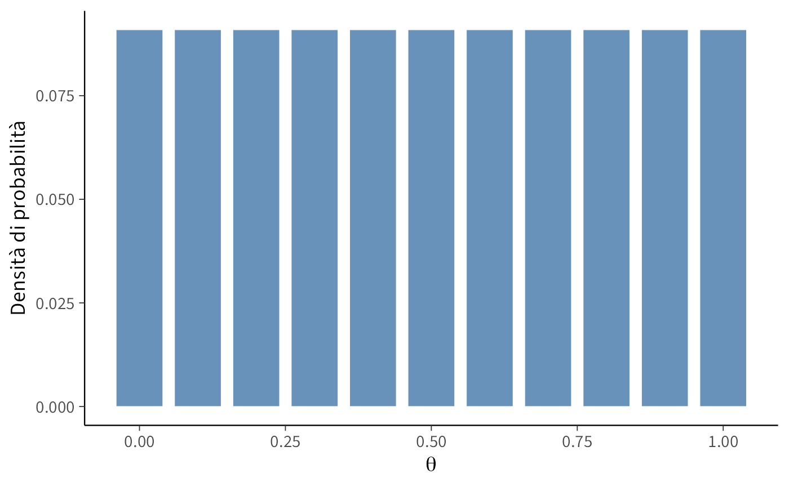
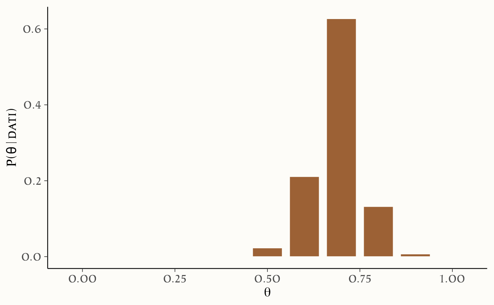
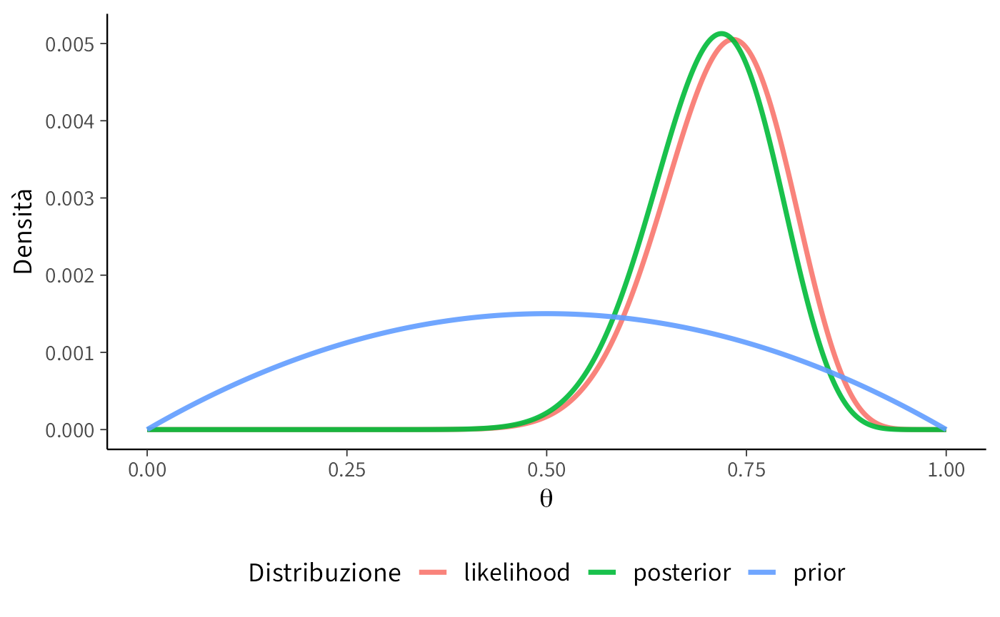
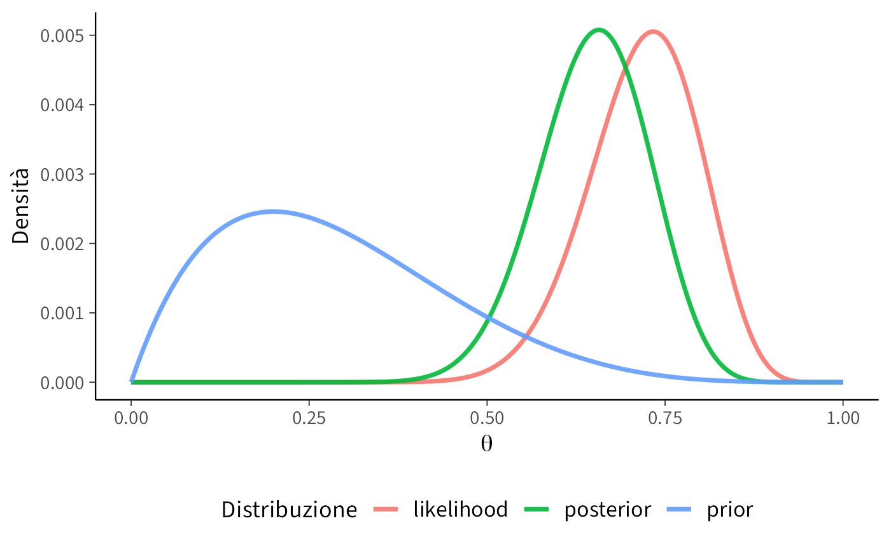
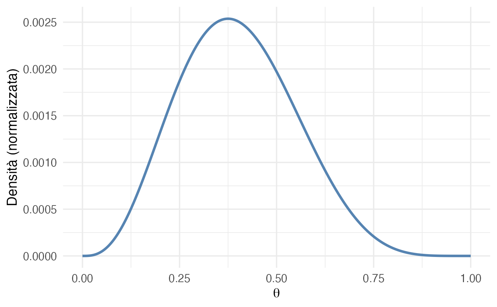
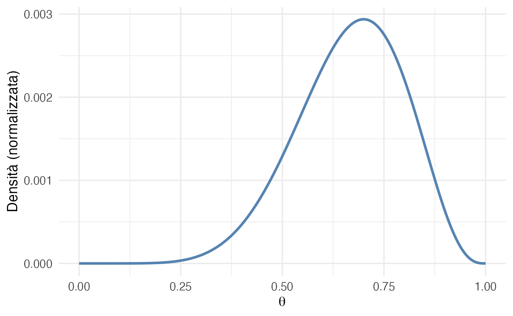

here::here("code", "_common.R") |>
source()
# Load packages
if (!requireNamespace("pacman")) install.packages("pacman")
pacman::p_load(HDInterval)5 Aggiornare le credenze su un parametro: dal prior alla posterior
“The probability of any event is the ratio between the value at which an expectation depending on the happening of the event ought to be computed, and the value of the thing expected upon its happening.”
— Thomas Bayes, An Essay towards Solving a Problem in the Doctrine of Chances
Introduzione
Nei capitoli precedenti abbiamo riflettuto sul ruolo centrale dell’incertezza nella ricerca psicologica e abbiamo visto come l’approccio bayesiano offra un linguaggio naturale e potente per rappresentarla. Abbiamo anche distinto tra modelli fenomenologici, che descrivono semplicemente le relazioni tra variabili, e modelli meccanicistici, che invece cercano di formalizzare i processi psicologici sottostanti. In questo capitolo ci concentreremo su un caso di studio tra i più diffusi e istruttivi: l’inferenza sulla proporzione di successi in un compito sperimentale o in un campione di soggetti.
5.1 Perché partire dalle proporzioni?
Gran parte dei dati psicologici assume una forma binaria. Uno stimolo può essere ricordato oppure dimenticato, una terapia può produrre beneficio oppure no, una risposta in un compito cognitivo può essere corretta oppure errata. In tutti questi esempi, ciò che osserviamo è una sequenza di successi e insuccessi, e la grandezza che ci interessa stimare è la proporzione di successi nella popolazione o nel campione considerato.
Analizzare questo caso, per quanto elementare possa sembrare, è estremamente utile. Ci permette di collegare in modo diretto i dati osservati a un modello probabilistico, di comprendere concretamente come prior e posterior operino all’interno di un modello Beta-Binomiale, e di porre le basi per estensioni più articolate. Da qui, infatti, sarà naturale passare a modelli capaci di descrivere processi dinamici più complessi che stanno alla base dei comportamenti osservati.
5.2 Collegamento con la crisi di replicazione
Molte delle controversie emerse in psicologia hanno riguardato proprio studi che confrontavano proporzioni tra gruppi sperimentali — ad esempio la percentuale di partecipanti che manifestano un certo effetto. Una delle debolezze ricorrenti di questi lavori è stata la presentazione delle proporzioni come semplici stime puntuali, trascurando di mostrare l’incertezza che inevitabilmente le accompagna.
L’approccio bayesiano offre un rimedio a questa limitazione. Non ci dice soltanto quale sia la proporzione più plausibile, ma fornisce anche una rappresentazione trasparente del grado di incertezza residuo. Questa prospettiva incoraggia interpretazioni più caute e cumulative, contribuendo ad affrontare uno dei problemi che hanno alimentato la crisi di replicabilità in psicologia.
Panoramica del capitolo
- Applicare l’aggiornamento bayesiano per affinare credenze.
- Rappresentare distribuzioni a priori (discrete e continue).
- Calcolare la verosimiglianza e aggiornare la distribuzione a priori.
- Derivare e interpretare la distribuzione a posteriori.
- Usare il metodo a griglia per approssimare la distribuzione a posteriori.
- Applicare il modello binomiale per stimare probabilità e incertezze.
- Calcolare medie, mode e intervalli di credibilità.
- Utilizzare la distribuzione Beta come prior continuo.
5.3 Verosimiglianza binomiale
Nei capitoli precedenti abbiamo introdotto l’idea centrale dell’approccio bayesiano: l’incertezza non si rappresenta con un singolo numero, ma con una distribuzione di probabilità. Possiamo ora applicare questo principio a un caso concreto e molto frequente nella ricerca psicologica: l’osservazione di una sequenza di successi e insuccessi.
Dati di questo tipo sono onnipresenti. Pensiamo a uno studente che risponde a una serie di domande (corretto o errato), a un paziente che mostra oppure no un miglioramento clinico, o ancora a un partecipante che sceglie o non sceglie uno stimolo in un compito cognitivo. In tutti questi esempi, ciò che raccogliamo è un conteggio di successi all’interno di un certo numero di prove. La distribuzione che descrive matematicamente la probabilità di ottenere ciascun conteggio è la binomiale, che costituisce il modello fenomenologico di base per i dati binari.
La distribuzione binomiale specifica la probabilità di osservare \(y\) successi in \(n\) prove indipendenti, ciascuna con probabilità di successo \(\theta\):
\[ p(y \mid \theta) \;=\; \text{Bin}(y \mid n, \theta) \;=\; \binom{n}{y} \, \theta^y (1 - \theta)^{n-y}, \] dove \(\theta\) è la probabilità di successo in una singola prova, \(y\) è il numero osservato di successi, e \(n\) è il numero totale di prove (fissato dallo sperimentatore).
5.4 Esempio psicologico: giudizio morale in un dilemma
Un ambito di applicazione è lo studio dei dilemmi morali, come il noto problema del treno (Foot, 1967; Greene et al., 2001), utilizzati in psicologia per indagare i processi decisionali ed etici (per es., Bucciarelli et al., 2008). Immaginiamo che un ricercatore voglia stimare la proporzione di adulti che considerano accettabile compiere un’azione moralmente controversa, ad esempio deviare un treno per salvare cinque persone, causando però la morte di una persona.
Ogni partecipante legge un singolo scenario e deve dare una risposta binaria:
- 1 = giudica l’azione moralmente accettabile (successo),
- 0 = giudica l’azione non accettabile (insuccesso).
Supponiamo che in un campione di 30 soggetti indipendenti, 22 abbiano giudicato l’azione accettabile.
In termini probabilistici:
- ogni soggetto fornisce un giudizio indipendente, modellabile come una variabile di Bernoulli con probabilità di successo \(\theta\);
- il numero totale di giudizi favorevoli segue una distribuzione binomiale:
\[ Y \;\sim\; \text{Binomiale}(n = 30, \theta), \]
dove \(Y = 22\) rappresenta il numero di successi osservati.
5.5 Obiettivo inferenziale
L’obiettivo è stimare \(\theta\), cioè la probabilità che un adulto scelto a caso dalla popolazione giudichi moralmente accettabile l’azione descritta nel dilemma.
Nel quadro bayesiano, questo significa combinare due fonti di informazione: la verosimiglianza, che deriva dai dati osservati (22 successi su 30), e una distribuzione a priori, che rappresenta le credenze iniziali su \(\theta\). Dall’integrazione di queste due componenti otteniamo la distribuzione a posteriori, che sintetizza la nostra conoscenza aggiornata dopo aver osservato i dati.
5.6 Metodo basato su griglia
Il metodo basato su griglia è uno strumento semplice ma potente per capire come funziona l’aggiornamento bayesiano. La sua logica è intuitiva: invece di ricorrere a formule complicate o a metodi di campionamento avanzati, discretizziamo lo spazio dei parametri e calcoliamo la distribuzione a posteriori “punto per punto”.
I passaggi fondamentali sono quattro:
- Definire la griglia. Scegliamo un insieme di valori possibili per il parametro di interesse (ad esempio \(\theta \in [0,1]\)).
- Calcolare la verosimiglianza. Per ciascun valore \(\theta\_i\), stimiamo quanto i dati siano compatibili con quel valore.
- Combinare con il prior. Moltiplichiamo verosimiglianza e prior: il risultato è proporzionale alla distribuzione a posteriori non normalizzata.
- Normalizzare. Dividiamo per la somma totale, così da ottenere una distribuzione di probabilità valida (che somma a 1).
Il risultato è una rappresentazione discreta della distribuzione a posteriori, che mostra chiaramente come i dati aggiornano le credenze iniziali.
5.7 Aggiornamento bayesiano con una distribuzione a priori discreta
5.7.1 Una prima scelta di prior
In assenza di informazioni specifiche, possiamo assumere che tutti i valori di \(\theta\) siano ugualmente plausibili. Per esempio:
- definiamo una griglia \({0, 0.1, 0.2, \dots, 1}\),
- assegniamo a ciascun valore la stessa probabilità: \(p(\theta) = 1/11 \approx 0.09\).
Questa scelta corrisponde a un prior uniforme discreto, che rappresenta massima incertezza: nessun valore è privilegiato a priori.
5.7.2 L’aggiornamento con i dati
Abbiamo osservato \(y = 22\) successi su \(n = 30\) prove (i giudizi morali favorevoli). Per ogni valore \(\theta\) nella griglia:
-
calcoliamo la verosimiglianza binomiale:
\[ p(y \mid \theta) = \binom{30}{22}\,\theta^{22}(1-\theta)^8, \]
moltiplichiamo per la probabilità a priori,
normalizziamo dividendo per la somma di tutti i valori ottenuti.
Il risultato è una distribuzione a posteriori discreta che assegna più probabilità ai valori di \(\theta\) vicini a \(22/30 \approx 0.7\).
5.8 Interpretazione
- Prima dei dati → tutti i valori di \(\theta\) erano considerati ugualmente plausibili.
- Dopo i dati → valori come \(\theta = 0.7\) o \(0.75\) diventano molto più probabili; valori estremi come \(0.2\) o \(0.9\) quasi scompaiono.
In altre parole, i dati restringono la gamma di valori plausibili: la massa di probabilità si concentra dove i dati sono più compatibili con il modello.
5.9 Implementazione in R
Definiamo la griglia:
theta <- seq(0, 1, by = 0.1) # da 0 a 1 con passo 0.1Un prior uniforme:
Visualizzazione:
ggplot(data.frame(theta, prob = priori_unif), aes(x = theta, y = prob)) +
geom_col(width = 0.08) +
labs(x = expression(theta), y = "Densità di probabilità")
Se vogliamo invece favorire valori centrali:
priori_inf <- c(
0, 0.05, 0.05, 0.05, 0.175, 0.175, 0.175, 0.175, 0.05, 0.05, 0.05
)La verosimiglianza:
verosimiglianza <- dbinom(22, size = 30, prob = theta)La distribuzione a posteriori:
posteriori_non_norm <- priori_inf * verosimiglianza
posteriori <- posteriori_non_norm / sum(posteriori_non_norm)Statistiche riassuntive:
5.10 Cosa mostrano i grafici
- Il grafico della verosimiglianza ha un picco tra 0.6 e 0.8 → significa che questi valori di \(\theta\) spiegano bene i dati.
- La combinazione con il prior modifica questa evidenza: se il prior è uniforme, lascia che siano i dati a parlare; se il prior favorisce valori centrali, attenua leggermente il peso delle code.
- La distribuzione a posteriori finale concentra la probabilità nei valori intorno a \(\theta \approx 0.7\), riflettendo l’apprendimento dai dati.
5.11 Aggiornamento bayesiano con una distribuzione a priori continua
Il passo successivo, rispetto al metodo basato su griglia discreta, è usare una distribuzione continua come priori. Nel caso delle proporzioni, la scelta naturale è la distribuzione Beta:
- il suo supporto è l’intervallo \(\[0,1]\), esattamente come \(\theta\);
- è la distribuzione coniugata della Binomiale (posterior ancora una Beta);
- è flessibile: con due parametri \((\alpha,\beta)\) possiamo modellare molte forme diverse di credenze iniziali.
Alcuni esempi:
- \(\text{Beta}(2,2)\) → priori simmetrica e debolmente informativa,
- \(\text{Beta}(2,5)\) → priori che favorisce valori bassi di \(\theta\).
5.11.1 Implementazione in R
Calcoliamo la densità della distribuzione \(\text{Beta}(2,2)\) su una griglia di valori:
Visualizziamo il prior:
ggplot(data.frame(theta, prior = prior_beta_2_2), aes(x = theta, y = prior)) +
geom_line(linewidth = 1.2, color = "#5d5349") +
labs(x = expression(theta), y = "Densità")
Nel nostro esempio (22 successi su 30 prove), la verosimiglianza binomiale per ciascun valore di \(\theta\) è:
likelihood <- dbinom(22, size = 30, prob = theta)L’aggiornamento bayesiano consiste nel combinare prior e verosimiglianza:
posterior_unnorm <- prior_beta_2_2 * likelihood
posterior <- posterior_unnorm / sum(posterior_unnorm)Visualizziamo prior, verosimiglianza e posterior insieme:
df <- data.frame(
theta,
prior = prior_beta_2_2 / sum(prior_beta_2_2),
likelihood = likelihood / sum(likelihood),
posterior
)
df_long <- df |>
pivot_longer(cols = c("prior", "likelihood", "posterior"),
names_to = "Distribuzione", values_to = "Densità")
ggplot(df_long, aes(x = theta, y = Densità, color = Distribuzione)) +
geom_line(size = 1.2) +
labs(x = expression(theta), y = "Densità") +
theme(legend.position = "bottom")
5.11.2 Un prior asimmetrico
Se partiamo da credenze che privilegiano valori bassi, ad esempio \(\text{Beta}(2,5)\):
Visualizziamo:
df <- data.frame(
theta,
prior = prior_2_5 / sum(prior_2_5),
likelihood = likelihood / sum(likelihood),
posterior
)
df_long <- df |>
pivot_longer(cols = c("prior", "likelihood", "posterior"),
names_to = "Distribuzione", values_to = "Densità")
ggplot(df_long, aes(x = theta, y = Densità, color = Distribuzione)) +
geom_line(size = 1.2) +
labs(x = expression(theta), y = "Densità") +
theme(legend.position = "bottom")
5.11.3 Interpretazione
- Con \(\text{Beta}(2,2)\), il prior è bilanciato: dopo i dati, la posterior si concentra chiaramente intorno a \(\theta \approx 0.7\), coerente con 22 successi su 30.
- Con \(\text{Beta}(2,5)\), il prior parte “scettico” (favorisce valori bassi). Dopo l’aggiornamento, la posterior riflette un compromesso: la forma finale rimane spostata verso l’alto, ma conserva traccia delle credenze iniziali.
5.11.4 Sintesi didattica
Questo esempio mostra il cuore dell’inferenza bayesiana:
- i dati da soli non bastano,
- il prior da solo non basta,
- la conoscenza emerge dall’integrazione dei due.
Ogni volta che aggiorniamo, otteniamo una distribuzione a posteriori che rende esplicito non solo qual è il valore più plausibile, ma anche quanto siamo incerti e quanto il risultato dipende dalle ipotesi iniziali.
Riflessioni conclusive
In questo capitolo abbiamo affrontato uno dei casi più elementari ma fondamentali dell’inferenza statistica: la stima della proporzione di successi. Combinando la verosimiglianza binomiale con un prior Beta abbiamo visto in azione il teorema di Bayes: ciò che sapevamo prima viene aggiornato dai dati, producendo una distribuzione a posteriori che integra conoscenze pregresse ed evidenza empirica.
Questo esempio mette in luce un punto cruciale: l’incertezza non è un ostacolo da rimuovere, ma un elemento strutturale dell’inferenza scientifica. L’approccio bayesiano, a differenza di quello tradizionale che spesso riduce i risultati a un singolo numero o a un verdetto sì/no, restituisce una rappresentazione più onesta e informativa. La distinzione tra credenze iniziali (prior), dati osservati e credenze aggiornate (posterior) fornisce un quadro concettuale trasparente e cumulativo, coerente con le riflessioni già sviluppate sulla crisi di replicabilità e sulla necessità di modelli confrontabili e chiari.
Dal punto di vista computazionale, il metodo su griglia che abbiamo usato è un ottimo strumento formativo. La sua logica è semplice: discretizzare lo spazio dei parametri, calcolare prior e verosimiglianza, normalizzare e ottenere la posterior. Questa procedura, pur rudimentale, rende visibile il cuore dell’inferenza bayesiana e la natura dinamica dell’aggiornamento. Naturalmente, la sua applicabilità pratica si esaurisce rapidamente: la maledizione della dimensionalità1 rende presto impraticabile questo approccio quando i parametri aumentano.
Nei prossimi capitoli passeremo dunque a strumenti più sofisticati, come il campionamento MCMC. Pur essendo più complessi, mantengono intatta la logica bayesiana che abbiamo visto operare nel semplice modello binomiale. In questo senso, il metodo a griglia rimane prezioso: non come tecnica da applicare in pratica, ma come laboratorio concettuale che consente di osservare da vicino il meccanismo dell’aggiornamento bayesiano, prima di affrontare strumenti più potenti e generali.
ImportanteEsercizio
In uno studio sulla percezione delle emozioni, un partecipante osserva 10 fotografie di volti arrabbiati. Deve indicare se il volto esprime rabbia o no. Ogni risposta può essere corretta (1) o errata (0).
I dati osservati del partecipante sono:
1, 0, 1, 1, 1, 0, 0, 1, 1, 1→ Totale: 7 successi su 10 prove → \(y = 7\), \(n = 10\).
Obiettivo: stimare la probabilità \(\theta\) che il partecipante riconosca correttamente un volto arrabbiato, tenendo conto sia dei dati osservati sia di conoscenze pregresse.
Prior Informativo.
Supponiamo di voler adottare un approccio cautamente pessimistico sulle capacità iniziali del partecipante, basandoci su studi precedenti che indicano un riconoscimento della rabbia non sempre accurato, ad esempio mediamente intorno al 40% con moderata incertezza.
Per rappresentare questa convinzione, scegliamo come distribuzione a priori una Beta(4, 6):
- Media: \(\mu = \frac{4}{4+6} = 0.4\)
- Varianza: \(\frac{4 \cdot 6}{(10)^2 \cdot 11} = 0.0218\)
Questa prior concentra la massa di probabilità su valori inferiori a 0.5, ma lascia spazio anche a livelli di competenza superiori.
Calcolo della Distribuzione a Posteriori con il Metodo Basato su Griglia.
1. Griglia di valori per \(\theta\).
2. Calcolo della distribuzione a priori Beta(4, 6).
Visualizzazione:
ggplot(data.frame(theta, prior), aes(x = theta, y = prior)) +
geom_line(linewidth = 1.2) +
labs(
x = expression(theta),
y = "Densità (normalizzata)"
) +
theme_minimal(base_size = 14)
3. Calcolo della verosimiglianza per 7 successi su 10.
Visualizzazione:
ggplot(data.frame(theta, likelihood), aes(x = theta, y = likelihood)) +
geom_line(linewidth = 1.2) +
labs(
x = expression(theta),
y = "Densità (normalizzata)"
) +
theme_minimal(base_size = 14)
4. Calcolo della distribuzione a posteriori.
unnormalized_posterior <- prior * likelihood
posterior <- unnormalized_posterior / sum(unnormalized_posterior)5. Visualizzazione congiunta: prior, likelihood e posteriori.
data <- data.frame(theta, prior, likelihood, posterior)
# Imposta i livelli desiderati con nomi leggibili
long_data <- pivot_longer(
data,
cols = c("prior", "likelihood", "posterior"),
names_to = "distribution",
values_to = "density"
) |>
mutate(distribution = factor(
distribution,
levels = c("prior", "likelihood", "posterior"),
labels = c("A Priori", "Verosimiglianza", "A Posteriori")
)
)
ggplot(
long_data,
aes(x = theta, y = density, color = distribution)
) +
geom_line(linewidth = 1.2) +
labs(
x = expression(theta),
y = "Densità (normalizzata)",
color = NULL
) +
theme(legend.position = "bottom")
Riepilogo:
- la prior (Beta(4,6)) riflette una convinzione iniziale più scettica;
- la verosimiglianza è centrata su \(\theta = 0.7\), corrispondente a 7 successi su 10;
- la posteriori media tra prior e dati, ma si sposta chiaramente verso destra, evidenziando l’effetto aggiornamento bayesiano.
Questo esempio mostra come l’approccio bayesiano:
- integra in modo trasparente dati individuali e credenze pregresse;
- produce una stima personalizzata della capacità del partecipante;
- permette di quantificare l’incertezza in modo completo, tramite la distribuzione a posteriori.
Quantità a Posteriori.
Media:
posterior_mean <- sum(theta * posterior)
posterior_mean
#> [1] 0.55Deviazione standard:
Moda:
posterior_mode <- theta[which.max(posterior)]
posterior_mode
#> [1] 0.556Intervallo di credibilità al 94%:
Questo esercizio mostra come:
- l’informazione pregressa può essere incorporata in modo trasparente in un modello bayesiano;
- la posteriori riflette una combinazione tra dati osservati e conoscenze precedenti.
Bibliografia
Albert, J., & Hu, J. (2019). Probability and Bayesian Modeling. CRC Press.
Bucciarelli, M., Khemlani, S., & Johnson-Laird, P. N. (2008). The psychology of moral reasoning. Judgment and Decision making, 3(2), 121–139.
Foot, P. (1967). The problem of abortion and the doctrine of the double effect. Oxford Review, 5, 5–15.
Greene, J. D., Sommerville, R. B., Nystrom, L. E., Darley, J. M., & Cohen, J. D. (2001). An fMRI investigation of emotional engagement in moral judgment. Science, 293(5537), 2105–2108.
Hardwicke, T. E., Thibault, R. T., Kosie, J. E., Wallach, J. D., Kidwell, M. C., & Ioannidis, J. P. (2022). Estimating the prevalence of transparency and reproducibility-related research practices in psychology (2014–2017). Perspectives on Psychological Science, 17(1), 239–251.
Lo spazio dei parametri cresce esponenzialmente con la complessità del modello. Se dividiamo ogni parametro in 100 valori possibili, un modello con 10 parametri richiede \(100^{10} = 10^{20}\) valutazioni: un numero irrealistico. Per questo servono tecniche più efficienti, come i metodi Monte Carlo che incontreremo nei capitoli successivi.↩︎